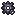
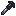
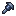

The five fragments#
Each world has one of each fragment, buried 2,000 to 4,000 blocks from 0, 0 at Y −48 to −17, each in a different direction. A sixth spot holds the Maltruant Altar.
Find them with the  Galvan Compass (sneak + right-click) or, as an operator,
Galvan Compass (sneak + right-click) or, as an operator, /chrono locate.
Getting close to a fragment for the first time brings Exo-Skull and Subdora through time
portals (at most once every 90 seconds). Collect all five for the Assembling Evil advancement.
Summoning#
Place the fragments on the altar in this layout, all at the same height (north is up). Gear and Hex can swap places.

Gear or Hexx − 5, z − 1
Part IIx, z · the anchor Keyx − 5, z + 4
Keyx − 5, z + 4
Part Ix, z + 4When the last one goes down, the five parts lift off, float together and a red portal opens. Maltruant steps out a few seconds later. It doesn't work on Peaceful, or while another Maltruant is already active near the altar.
Bring armor, food and healing. Don't do it near your base: his attacks and his arrival age the blocks around the altar.
The fight#
I
- Health
- 600 to 401
- Attack
- 8
- Armor
- 30
- Music
- Khyber‑Netic
II
- Health
- 400 to 201
- Attack
- 12
- Armor
- 37.5
- Music
- Big Bad Psyphon
III
- Health
- 200 to 0
- Attack
- 16
- Armor
- 45
- Music
- Future Mal‑Formed
Attack damage also scales with difficulty. Maltruant doesn't follow a fixed pattern. He reads what you're doing, forecasts your attacks, dodges projectiles and picks his next move from 28 skills. He also knows the attacks of other mods' bosses (Cataclysm, Twilight Forest, Ice and Fire, Mowzie's Mobs, Alex's Caves, Iron's Spells and more), so bringing them along won't catch him out. While he's around, Omnitrixes nearby can glitch.
Full diamond armor and the Diamond Champion are still the
best picks against him. As Clockwork you can fire back into his beams and clash with them. The  Galvan EMP makes him take more damage.
Galvan EMP makes him take more damage.
Active skills#
- Temporal Striker
- A fast close-range attack.
- Chrono Crusher
- A heavier strike that cracks the ground.
- Singularity Uppercut
- Launches you upwards, then follows up with a chest beam.
- Ruinous Barrage
- Advances while throwing a series of heavy punches.
- Timebreaker Grip
- Grabs you and throws you away.
- Cataclysmic Swing
- Swings a grabbed target into the ground again and again, then throws it.
- Heavenfall Execution
- Chases you into the air, grabs you and slams you into the ground.
- Chrono Impact
- Leaps at you and lands with a powerful impact.
- Crimson Hand Cannon
- A focused beam from one hand.
- Heart of Ruin
- A sustained beam from the chest core.
- Twin Erasure
- Beams from both hands at once.
- Temporal Crossfire
- Several beams at once from different angles.
- Rift Volley
- A volley of temporal projectiles.
- Paradox Counter
- Answers your attacks with a temporal beam.
- Vanishing Assault
- Teleports around the arena, then strikes.
- Temporal Shockwave
- A close-range shockwave that knocks you back.
- Worldbreaker
- Hits the ground and damages everything around him.
- Chrono Bind
- Holds you in place with temporal energy for a moment.
- Aegis Shatter
- A powerful attack that breaks through your defenses (Armor Break).
- Entropy Ray
- Slowly erases the blocks and entities it touches.
- Eventide
- Slows time around him.
- Frozen Moment
- Freezes your projectiles in mid-air.
Ultimate skills#
- Temporal Doomsday
- Uses the Time Bomb to freeze, move and erase targets.
- Octagon Oblivion
- A ring of synchronized beams for a devastating attack.
Passive skills#
- Echoes of Maltruant
- Summons copies of himself to help.
- Timeborn Heralds
- Calls Exo-Skull and Subdora into the fight.
- Paradox Phase
- Briefly phases out of time to dodge an attack.
- Chrono Bastion
- Guards against incoming attacks, then counterattacks.
Rewards#
 Chronosapien Time Bomb and
Chronosapien Time Bomb and  Music Disc: Future Mal‑Formed, always
Music Disc: Future Mal‑Formed, always Timeclock Key and 6 to 12
Timeclock Key and 6 to 12  Timeclock Gear, always
Timeclock Gear, always- A note from Rook Blonko, always
- Mending book (50%), Time Reborn V book (25%)
 Chronosapien DNA (two 10% rolls),
Chronosapien DNA (two 10% rolls),  Time Beast Spawn Egg (5%)
Time Beast Spawn Egg (5%)
When Maltruant is beaten and explodes, his five fragments and the altar generate again somewhere new, so you can fight him again.